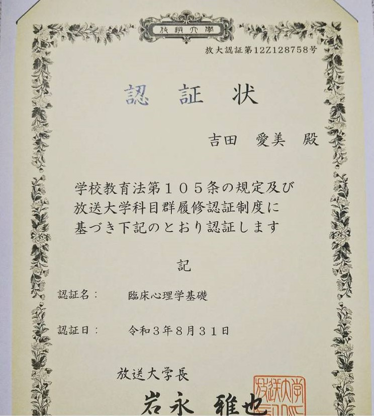

＜大学時代＞
～放送大学って何？～
"放送大学って放送関係について学ぶの？"とよく聞かれますが、全然違います。
放送大学は、文部科学省および総務省管轄の正規の私立大学です。
多くの人が全日制に進学する中、通信制へ進学することは珍しいかもしれません。
しかし、通信制だからこそ、できることがたくさんあります。

＜大学時代＞
～放送大学って何？～
"放送大学って放送関係について学ぶの？"とよく聞かれますが、全然違います。
放送大学は、文部科学省および総務省管轄の正規の私立大学です。
多くの人が全日制に進学する中、通信制へ進学することは珍しいかもしれません。
しかし、通信制だからこそ、できることがたくさんあります。
＜サークルの創設・運営＞
基礎心理学サークル
基礎心理学サークルは、2021年3月に先輩と共に立ち上げたサークルです。
私は大学内でのサークル活動に地域差があることを課題と考え、オンラインサークルを立ち上げました。
このサークルでは月に1回勉強会を開催し、同年代の学生と一緒に勉強を行っていました。 勉強会は1回4~5時間かけて行われていました。事前課題の答え合わせとその答えに対する議論が目的でした。
事前課題は各担当者が作成し、全員が提出することで毎月の課題を完成させていました。
担当者は問題を作成すると共に事前に答えや解説を用意しますが、
「なぜその答えになるのか。」「他の答えは考えられないのか」など
様々な観点から議論が行われ、盛り上がっていました。
このサークルを立ち上げたことにより、10代～20代の居場所づくり、大学内に
おけるサークル活動の地域差の解消に
貢献することができました。
このサークルを通して、学んだことは「根拠を明らかにしながら自分の意見を相手に伝えるスキル」と 「メンバーの課題の進捗管理の方法」です。
毎月議論を重ねることにより、相手に快く納得してもらえるためのスキルを磨くことができました。
また、運営側として日程調整やメンバーの課題作成状況の
把握・管理も行うことにより、遅れがちな人のフォローをしたり、期限が近づいたらお知らせメールを送るなどこまめにコミュニケーションをとることの大切さを学びました。
以上の学びは、社内ミーティングや自己管理、将来PL,PMとして働く際に活かせると考えております。
院試対策サークル
院試対策サークルは2022年8月に1人で立ち上げたサークルです。
教授や生徒との対面交流がほとんどない放送大学において、他大学の学生に比べ
院試対策が不利であることを課題と考え、立ち上げました。
このサークルを立ち上げたことにより、つながりの場所作りと院試対策における情報格差の減少に貢献することができました。
このサークルを通して学んだことは年長者との議論の仕方です。相手に敬意を表しながらも自分の意見を伝えるスキルを身につけました。 その結果、女子会のような和やかな雰囲気でなんでも相談し合うことができるようになりました。
以上の学びは、社内外のミーティングや普段のコミュニケーションに活かせると考えております。
＜卒業論文＞
卒業研究サークル
このサークルは2021年8月に立ち上げました。
このサークルでは、卒業研究を履修予定の人が仲間とつながったり、いつでも相談できるコミュニティづくりをおこなっていました。
放送大学では、卒業研究は自由履修であるためサポートが少ないことを課題と考え、卒業研究サークルを立ち上げました。
このサークルでは全員でなにかをするというよりも個人的に放送大学のサポートの受け方や指導教員の選び方など卒業研究に関する悩みを 自由に投稿することがほとんどでした。そのため、メンバーごとに活動頻度はバラバラでしたが、代表として有用な情報を見つけては共有することでメンバーの孤立感を高めないよう気を付けていました。
その結果、口コミが広がり現在10人以上のメンバーが所属しています。メンバーから、「このような場所を探していた」 「ここに入ってよかった」といわれたときに大きなやりがいを感じました。
この活動を通して自助グループによる孤立感の低下の効果を学ぶことができました。 これからもコミュニティの維持や創設に取り組んでいきたいと考えています。
ゼミ・研究室は？
ゼミや研究室は基本的にありません。そのため、卒業研究サークルの需要があります。 他大学では2年生からゼミや研究室に所属し先輩の背中をみながら、卒論や研究について学べるようですが、放送大学にはありません。 そのため、ESで「ゼミや研究室」についての質問は毎回困っています。 厳密にいえば、千葉本部にはあるのですが、受け入れ人数の限度、リモート対応の可否、教授の専門性などを考慮すると所属しない人が多いです。
理由は、千葉本部のゼミに所属せずに卒論を執筆することが可能な仕組みが整っているからです。 放送大学は47都道府県全てに学習センターが設置されており、各学習センターには数名の教授と事務員さんがいらっしゃいます。
そのため、自分の所属学習センターに在籍する教授に指導教員を依頼したり、授業を通して出会った教授に指導教員を依頼することで、 卒論を執筆できます。
私もこの仕組みを使い、昨年卒業論文の書き上げました。テーマは「日本における偏見の特徴とその分類」です。 卒論は非公開にしているため、資料はお渡しできませんが、要旨をお伝えすることは可能です。
教授とマンツーマンで卒論を書き上げた経験は、他大学ではできない貴重な経験であり、論理的思考や統計について丁寧な指導を受けることができました。